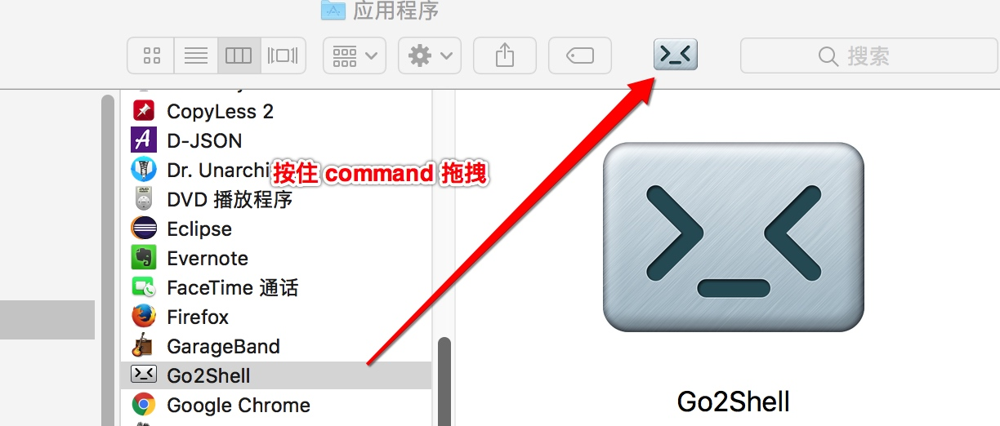
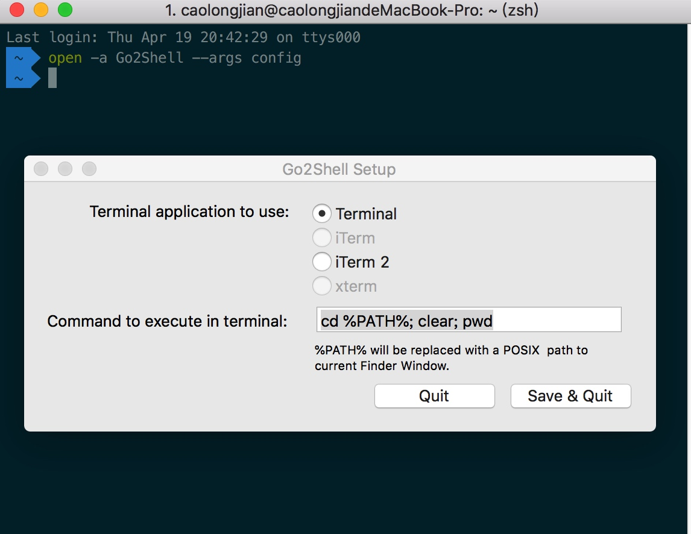
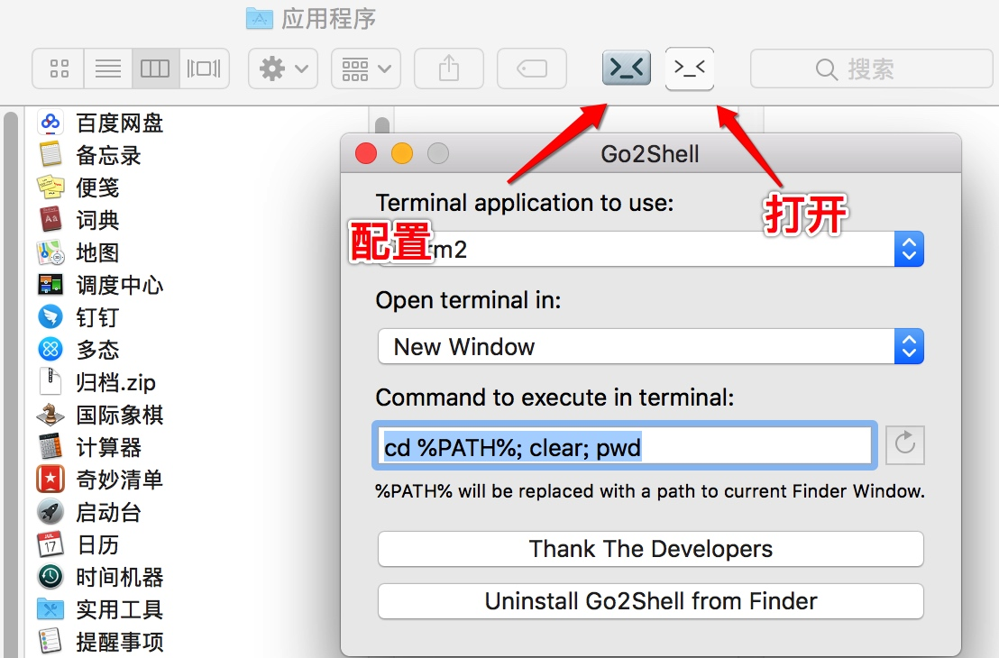
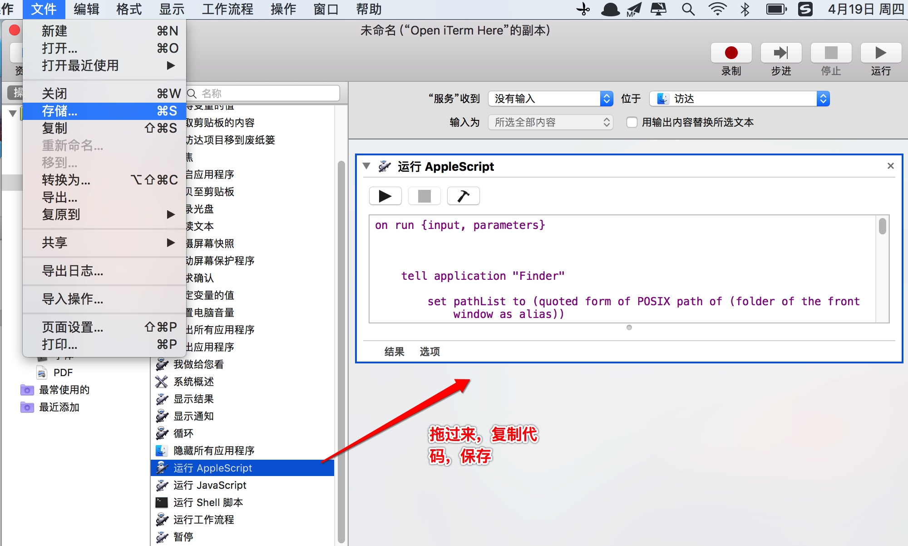
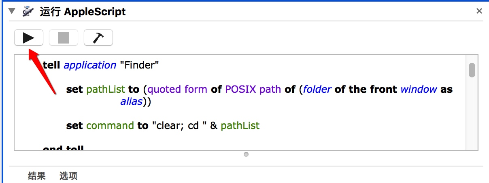
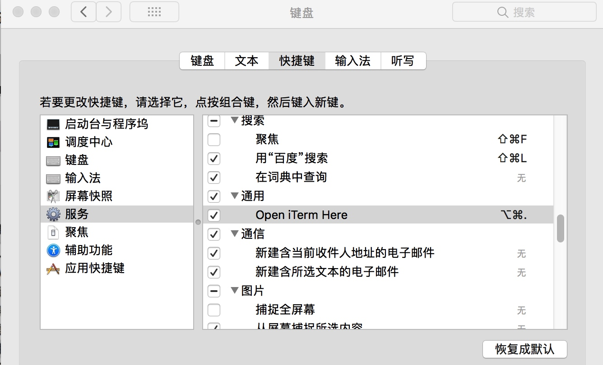
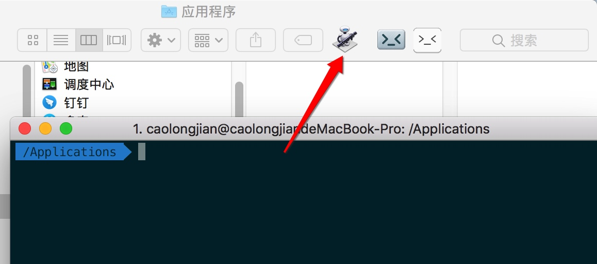

给Finder加上一个打开当前路径的终端的功能
有两种实现：
Go2Shell App 和 AppleScript扩展：
AppleScript 实现 Go2Shell 一样的可视化打开方式
一、 Go2Shell
1. 安装
1、Go2Shell官方安装 （推荐，因为AppStore下载的版本太低，无法打开iTerm2 -坑-）
http://zipzapmac.com/Go2Shell

至此就可以打开shell，不过仅仅是打开系统默认的终端shell
2. 进入 Preferences 的方式
open -a Go2Shell --args config

iTerm2 不能打开当前文件所在目录（）
3. 官网下载效果图(多了个 >_< 能直接打开配置)

二、配置 Automator 方法
1. 新建 Automator 服务
打开Automator，选择新建，选择服务
2. 设置 Automator 服务
1、 服务接受设为没有输入，位置设为Finder(访达)
2、 从左侧的资源库中找出 运行 AppleScript，拖到右侧，然后保存为Open iTerm Here

复制以下代码
代码意思是将当前最前面的Finder地址如果获取不到，则返回桌面地址然后通知iTerm的第一个窗口新建标签并跳到这个目录去
on run {input, parameters}
tell application "Finder"
set pathList to (quoted form of POSIX path of (folder of the front window as alias))
set command to "clear; cd " & pathList
end tell
tell application "System Events"
-- some versions might identify as "iTerm2" instead of "iTerm"
set isRunning to (exists (processes where name is "iTerm")) or (exists (processes where name is "iTerm2"))
end tell
tell application "iTerm"
activate
set hasNoWindows to ((count of windows) is 0)
if isRunning and hasNoWindows then
create window with default profile
end if
select first window
tell the first window
if isRunning and hasNoWindows is false then
create tab with default profile
end if
tell current session to write text command
end tell
end tell
end run
3、点击运行就能在 iTerm2 中打开当前目录

4、 设置快捷键
打开系统设置，再去键盘设置里改一下快捷键，然后就可以快速在Finder中通过iTerm打开当前目录了

三、扩展
Automator 创建应用
使用的 Automator AppleScript 时候就在想为什么使用创建的服务，好吧，换个思路创建个应用，尝试着以Go2Shell的方式按住command键拖到文件夹上，结果和Go2Shell实现的效果一样OK，对 Automator 的使用充满期望~~
